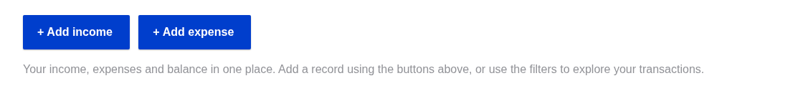
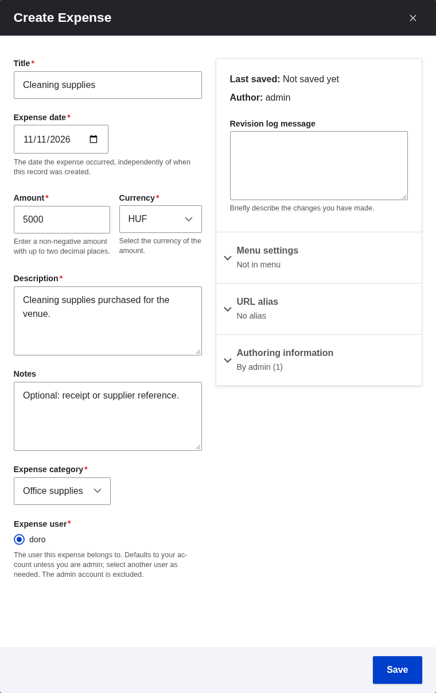
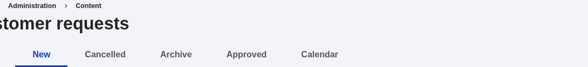
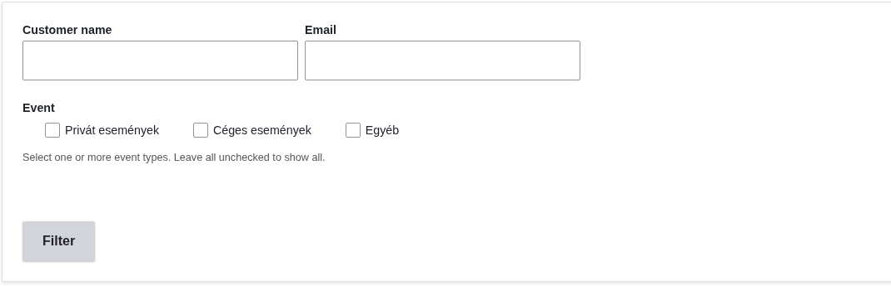
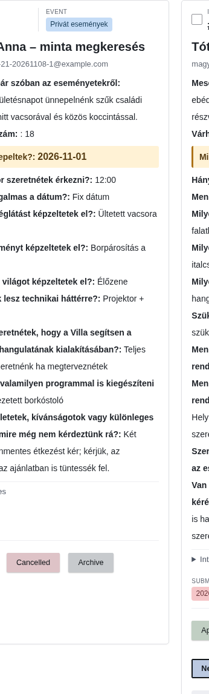
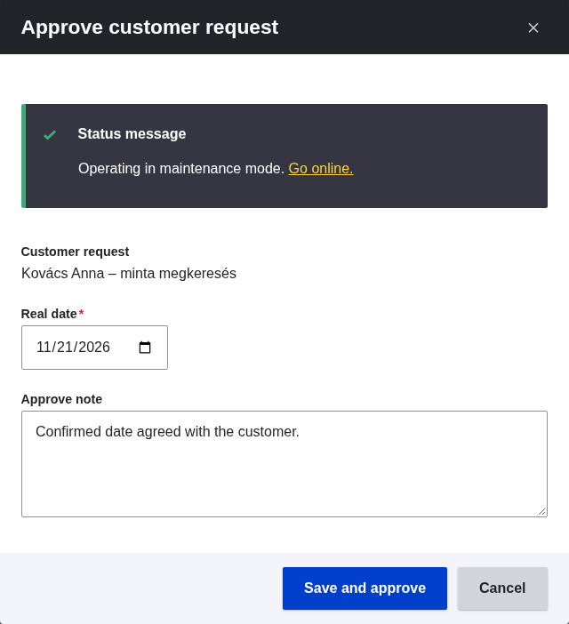
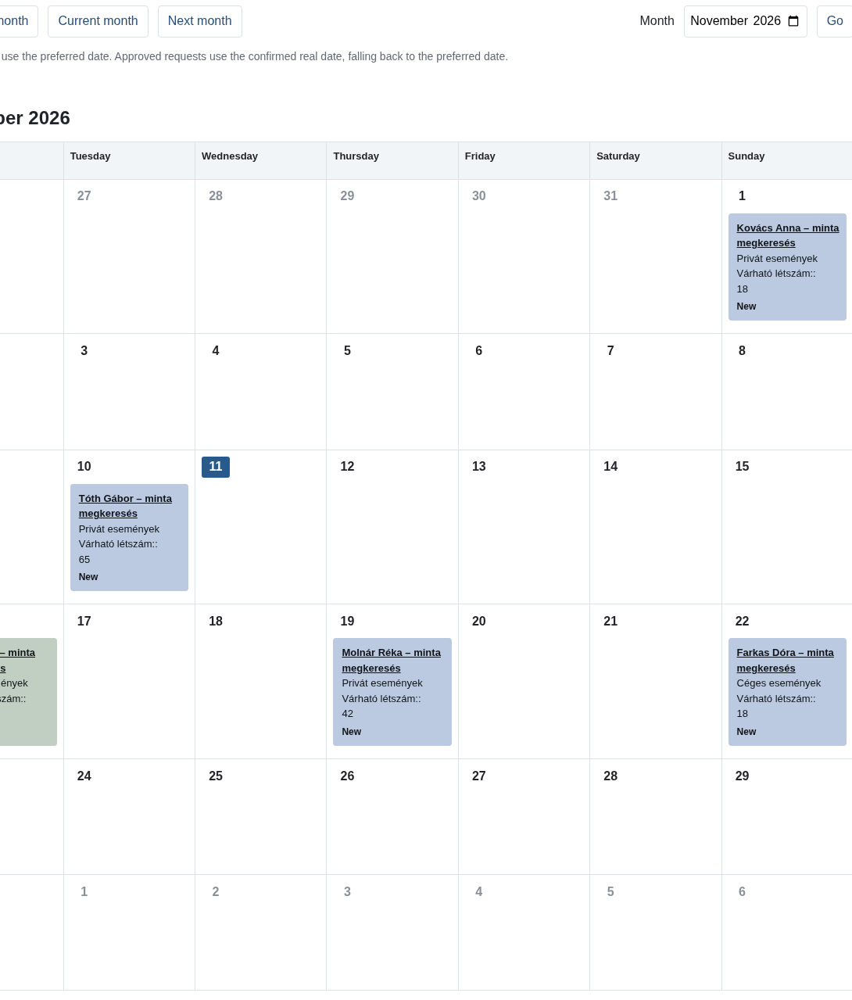

Use Income for money received and Expense for money spent. Both forms follow the same steps: open, fill in the details, then save.
Sign in with your staff account. If you have reporting access, open Dashboard at /admin/dashboard and choose Add income or Add expense.

No Dashboard access? Use the sidebar Create → Income or Create → Expense. You can also open /node/add/income or /node/add/expense. Your account needs permission to create that type of record.
| Field | What to enter |
|---|---|
| Title | Venue booking payment |
| Income date | The day you received the money, e.g. 11 November 2026. Use the calendar picker. |
| Amount / Currency | 25000 / HUF |
| Description | Payment received for a venue booking. |
| Notes | Optional invoice or booking reference. |
| Income category | Choose the relevant available category. The screenshot uses “Demo income”; your choices may differ. |
| Income user | Select the person this income belongs to. Check any preselected account. |
| Field | What to enter |
|---|---|
| Title | Cleaning supplies |
| Expense date | The day you spent the money, e.g. 11 November 2026. Use the calendar picker. |
| Amount / Currency | 5000 / HUF |
| Description | Cleaning supplies purchased for the venue. |
| Notes | Optional receipt or supplier reference. |
| Expense category | Choose the relevant available category. The screenshot uses “Office supplies”. |
| Expense user | Select the person this expense belongs to. Check any preselected account. |

Customer enquiries submitted through the event enquiry form are stored as private customer requests with New status. Use the request lists to review the details, approve an event or organise requests by status.
Request management requires the separate Manage Villa Promenade customer requests permission. Access to income, expenses or the financial Dashboard does not automatically grant access to customer requests. Ask your administrator if this area is missing.

| Tab | When to use it |
|---|---|
| All | See requests across statuses. |
| New | Review incoming requests that still need attention. |
| Approved | Find requests that have been approved. |
| Cancelled | Find requests marked as cancelled. |
| Archive | Keep requests out of the active workflow without deleting their data. |
| Calendar | Plan the month using New and Approved requests. |

Each card shows the request ID, customer name, email, event type, submitted answers and submission date. Review the planned event date, guest count and special requirements before approving.
Expand Internal notes when available. The Demo marker identifies demonstration data, not a live customer enquiry.
Lists are ordered by planned event date, with undated requests last. Use the page controls below the list when more requests are available.
Open a request using its customer-name link in the Calendar, then use the native Edit tab if your account has permission. Update the relevant contact or event fields, or add an internal note, then click Save. For approval, use the dedicated Approve workflow below.
Customer requests are private staff records, not public website content. Keep customer contact details and internal notes within the authorised team.

To leave the request unchanged, choose Cancel in the dialog or close it with ×. This Cancel button dismisses the dialog; it does not set the request to Cancelled.
The card also offers Cancelled, Archive and New controls. Unlike Approve, these save the selected status immediately. The current status is highlighted and its control is disabled.
After a status change, a request can disappear from the current status-specific list. Open its new status tab or All to find it again.
Archive is not Delete. Archiving keeps the request and its data. If you use an available delete or bulk-delete action, check the selected requests and the confirmation carefully: deletion permanently removes them.

The calendar includes New and Approved requests only. New requests use the preferred event date. Approved requests use Real date, falling back to the preferred date if no confirmed date is stored. Requests without a date appear separately below the calendar. Cancelled and archived requests remain available in their list tabs, not in this calendar.

Request screenshots use an administrator account and existing demonstration data. No requests were created, approved, edited, moved or deleted for this guide. The approval example was closed without saving; saving, status changes and deletion were not exercised.